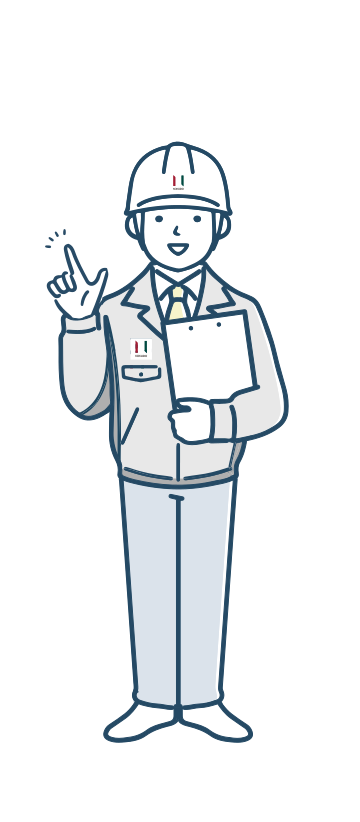

日本國土開發
LINE 平台
員工身分 LINE 驗證
為更完善公司 LINE 官方帳號的同仁帳號管理及配合後續活動進行，請先完成一次員工身分驗證、綁定您的 LINE 帳號。僅此一次，完成後日後都不需要再驗證。
請選擇所屬單位、姓名與出生年月日，核對無誤後，系統會寄驗證信到您的公司信箱。
驗證信已送出
已將驗證信寄到您的公司信箱，請點開信中連結完成驗證。
完成後日後就不需再驗證，即可直接填寫活動調查。（驗證完請點該頁的按鈕回 LINE；若沒有，重開此頁即可。）
活動出席回覆
目前沒有開放中的活動
待活動公告後，請重新開啟此頁面填寫。
新人報到

歡迎加入！請填寫以下資料完成報到登記，送出後待人事確認。
@jdc-corpn.com.tw
此為您希望的公司信箱帳號，最終以人事核定為準。
問題回報
找不到您的名字／單位、資料不符，或有其他問題，請點此回報。